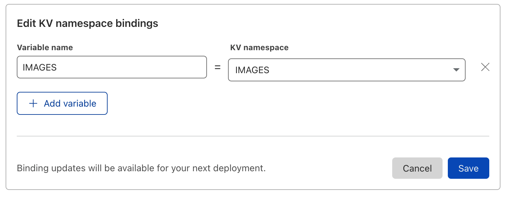

1. Cloudflare Pages
Welcome to Lab 1 at Cloudflare Connect 2022 - This lab will focus on setting up a simple image gallery deployed on Cloudflare Edge using Cloudflare Pages. By the end of this lab you will have:
Set up your first Pages project
Felt the developer experience when using Pages
Added dynamic functionality with with help from Cloudflare Workers/Functions
Build fast sites.In record time. Cloudflare Pages is a JAMstack platform for frontend developers to collaborate and deploy websites.
Learn More about Cloudflare Pages!
Check out the Cloudflare Homepage to learn more
1.1. Clone GitHub Repository
To make things easier we have setup a starter gallery app on GitHub. Lets fork and clone the repository.
gh repo fork cf-tme/connect_2022_lab1
This should create a fork of the starter repository in your gh account. Follow the fork with a clone
gh repo clone <yourgithubusername>/connect_2022_lab1
Now all the files should be local in your working directory, let navigate into the repo and start coding!
cd <yourgithubusername>/connect_2022_lab1
1.2. Deploy Pages Project from GitHub Repository
Deploying our GitHub project to pages is as simple as connecting our GitHub account to Cloudflare.
Login to the Cloudflare Dashboard
Select Pages on the left hand side and press Create a Project and select Connect GitHub

Authenticate to GitHub
If you are not already logged into GitHub in your browser you may be asked to re-authenticate
You will be prompted to Install and Authorize Cloudflare Pages to your github account, press the button to proceed.

Once connected you will be brought back to the Cloudflare Pages dashboard. Select connect_2022_lab1 on the following page

Once selected you will need to configure build parameters. This is build using React so we will set the following build parameters:
Project name - connect-2022-lab1
Production branch - master
Framework preset - Create React App
Build command - npm run build
Build output directory - /build

Press Deploy
Deployment Progress
Once started the deployment will take a few moments to complete - you can follow the deployment details to monitor progress of the deployment.
Once the deployment has completed you will be presented with a success message as well as a URL to visit your new project Select the link.
pages.dev Domain
By default new projects will automatically be given a *.pages.dev domain, If you would like to setup custom routes to your own domain you can do that through DNS CNAMEing (or directly in the project settings if your domain nameservers are Cloudflare)
When navigating to the link you should see a blurry image gallery.
Terrific! Congratulations you have successfully deployed a custom application using Cloudflare Pages.
1.3. Using Functions with Cloudflare Pages
Functions enable you to run server-side code to enable dynamic functionality without running a dedicated server. With Functions, you can introduce application aspects such as authenticating, querying databases, handling form submissions, or working with middleware.
Learn More about Functions!
Check out the Cloudflare Docs to learn more
For our simple gallery application we are going to create a new function that will simply return the time when navigating to the time page for our application.
Returning to our command line lets change to the functions directory
cd functions
Whatever name we give this file is going to be the path in our url. Lets create a new file called time.js
touch time.js
Now open that file in your favorite text editor.
Text Editor
VS Code is a versatile text editor that can be launched directly from the terminal using code
In the file enter the following code:
export const onRequest = () => {
return new Response(new Date().toISOString())
}
This is a fairly simple piece of code but it should just return the string with the current Date and Time in ISO format.
Save the file and return to our terminal window.
In order to push these changes to our project we simply just need to commit and push them to our repository and Cloudflare Pages will automatically rebuild the application.
To commit and push changes we use standard git commands:
gid add .
git commit -m "added new time function"
git push
Paged Auto-Build
By default Cloudflare Pages will rebuild and deploy your application with every push to the github repository, if this is undesirable auto-deployments can be temporarily turned off
If we return to the the Cloudflare Pages project we should see that the deployment is in progress - wait for it to complete.
Once complete we can renavigate to our application URL but this time going to the /time pages. We should see a very simple readout of the current date and time.
2022-05-06T02:58:04.165Z
Building APIs
Functions are great ways to build integrations into other APIs, or even build API endpoints for the web application itself
1.4. Creating and Binding KV store
Workers KV is Cloudflare’s globally replicated key-value storage solution. Binding these KV namespaces with your application are what make it truly full-stack - the ability to read and write data dynamically right from Cloudflare’s edge.
1.4.1. Creating an IMAGES KV Namespace
Our application has been written to read data from env.IMAGES - this means we need to bind our KV namespace to our project with the variable name “IMAGES”
From your Cloudflare account landing page navigate to Workers > KV
Verify Email
If you have not already confirmed your e-mail address for your Cloudflare Account you may be asked to Verify it here before creating any KV namespaces
Select Create Namespace and enter IMAGES in the Namespace Name and press Add

Namespace ID
Once your namespace is created you will be given a Namespace ID - this will be needed later on in Lab 2, so if you plan on joining us for Lab 2 go ahead and take note of this id - you can always navigate back to this screen and grab it later if needed.
1.4.2. Binding KV Namespace to Pages Project
Once our Namespace is created we must bind it to our Pages project so that our functions can leverage the data inside.
Look Ahead
We will be using this namespace in Lab 2 to store Image metadata that will then be read in dynamically update our gallery with images that we upload!
From the Left hand side navigation pane on the Cloudflare Dashboard select Pages then select our project connect_2022_lab1
In the top navigation bar select Settings and then Functions On the left hand side.
Select Add binding under the KV namespace binding (under Production sub-tab)
Enter IMAGES in the Variable name and Select the IMAGES KV namespace from the dropdown. And press Save

Manual Re-Deploy
In order for KV binding to take effect we need to rebuild the project - this is generally not an issue when live developing as a git push will force it but in this case to test a few things out we will manual kick off a re-deployment
1.4.2.1. Manually Re-Deploy Application
To kick off a manual re-deployment we must first select View build (in the bottom right) on the latest deployment of our application.

On the following page select Manage Deployment in the top right and press Retry Deployment

This will kickoff a manual deployment, give it a few moments to complete.
1.4.2.2. Validate KV Binding with API Call
Our web application has been build with an API to query KV store for image metadata and use that data to populate the image Gallery on the homepage. This api endpoint can be found at /api/images.
Empty KV but Homepage still has images?
The Eagle eyed of you may have noticed that even after Binding our KV we still see images on the Homepage - but how? There is no data in the KV store yet. This is because the values have been hardcoded - for now - in a few moments we will be changing this so that the data is populated dynamically
To validate our KV namespace has been bound properly we can quickly just navigate to our API endpoint /api/images in a Browser and should get back an empty array:
{"images":[]}
Congratulations your KV namespace has been successfully bound to your Application functions!
1.4.3. Fill Gallery images with dynamic data from KV
Now that our KV store is ready to use we can change our web application to dynamically fill gallery data with Images whose metadata is stored in the KV store. To change this behavior we need to go to edit our definition of the gallery images grid at - /src/components/ImageGrid.tsx
Open ImageGrid.tsx in your favorite text editor and look at line:53 - line:119
const data = {
images: [
{
id: "8277aeb6-f3fb-445d-43f9-ae710b3ffc00",
previewURL:
"https://imagedelivery.net/c_kvDVNdc0jEhXS4gDzgVA/8277aeb6-f3fb-445d-43f9-ae710b3ffc00/blurred",
name: "hannah-grace-fk4tiMlDFF0-unsplash.jpg",
alt: "string",
uploaded: "2021-11-17T06:31:25.203Z",
isPrivate: true,
},
{
id: "e45bc50e-814f-4f2a-e6ab-d68a3f457500",
... cont.
Either comment or delete the entire data array as we will be replacing it with our simple API call (The “A” in JAM stack) to pull the array of images from the KV store.
Enter the code below in place of the hard-coded image array
const { data, error } = useSWR<{ images: Image[] }>("/api/images");
if (error || data === undefined) {
return (
<div>
An unexpected error has occurred when fetching the list of images.
Please try again.
</div>
);
}
To commit and push changes we use standard git commands:
gid add .
git commit -m "add dynamic image population functionality"
git push
If we return to the the Cloudflare Pages project we should see that the deployment is in progress - wait for it to complete.
Once complete we can navigate to our application URL but this time we should see a blank Gallery Page!
LAB 1 COMPLETE!
You have successfully Completed Lab 1 - Cloudflare Pages, now you have a simple web gallery Application that will read data out from a KV store to dynamically populate images. We hope you can join us for Lab 2, where we will be using Cloudflare Images to upload and optimize images and serve them in our new Gallery!